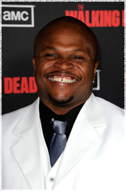

Айрон Синглтон
 Ти-Дог (актёр Айрон Синглтон) - член группы выживших.
Айрон Синглтон (Iron Singleton) - американский актёр, родился в США.
Известен широкой аудитории по роли головореза Атлона в номинированом на премию Academy Awords фильме Невидимая сторона (The Blind Side). Способность Айрона играть сильные, разноплановые роли сделала его незабываемым актёром и в фильмах и на телевидении.
В 2010 году Синглтон появился на большом экране в картине Лотерейный билет (Lottery Ticket) вместе с Бау Уау и Айс Кьюбом. В 2011 его можно было увидеть рядом с Николасом Кейджем в художественном фильме Голодный кролик атакует (Seeking Justice). Талант Синглтона недавно демонстрировался в нескольких телевизионных пилотах включая Detroit 1-8-7, Single Ladies от VH1 и Franklin & Bash от TNT. Среди других его телевизионных ролей Холм одного дерева и Somebodies.
Родился и вырос в Атланте, штат Джорджия. Учился на академическую и футбольную стипендию в Университете Джорджии, который окончил по двум профильным предметам - театр и речевые коммуникации. До прихода в кино и телевидение Айрон устраивал театральное шоу одного человека под названием IronE ... The Resurrected, которое получило восторженные отзывы. В свободное время Синглтон является председателем Youth Motivational и рефери юношеского спорта.
Известен зрителям по фильмам и сериалам:
Невидимая сторона (The Blind Side)
Лотерейный билет (Lottery Ticket)
Холм одного дерева (One Tree Hill)